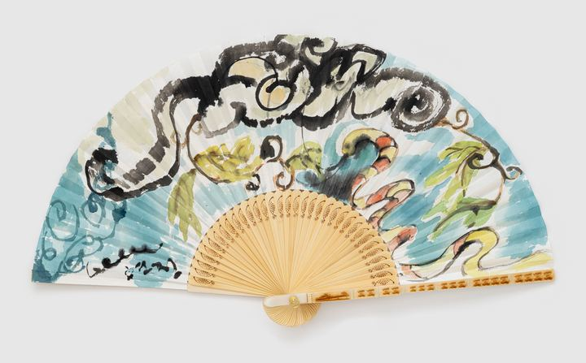

Reverence for Nature: Reconciliation through Curves자연의 경의: 곡선으로 잇는 화해

Across the top of the fan, a great ink-dark cloud coils in thick strokes, and beneath it, in a pale sky blue, yellow-green leaves sprout. Between the leaves, a snake banded in red and white lifts its head and winds its body. For a long time, snakes were a fear to me. Even now, I have not fully made friends with them. Still, I took up the brush. It has been said: I am life that wills to live, in the midst of life that wills to live. So is the snake, so is the leaf, and so am I. One need not love something in order to respect it. This fan is a small act of reverence, offered along the way of slowly making peace with fear.
부채 위쪽으로 커다란 먹구름이 굵은 붓질로 휘감기고, 그 아래 연한 하늘빛 속에 연둣빛 잎사귀들이 돋아 있다. 잎 사이로 붉고 흰 줄무늬의 뱀 한 마리가 고개를 들고 몸을 구불구불 튼다. 오랫동안 뱀은 나에게 두려움이었다. 지금도 온전히 친숙해지지는 못했다. 그래도 붓을 들었다. 나는 살려고 하는 생명들 가운데서 살려고 하는 하나의 생명이라는 말이 있다. 뱀도, 잎사귀도, 나도 그렇다. 좋아하지 않아도 존중할 수는 있다. 이 부채는 두려움과 조금씩 화해해 가는 길 위에서 바치는 작은 경의다.